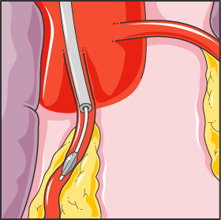
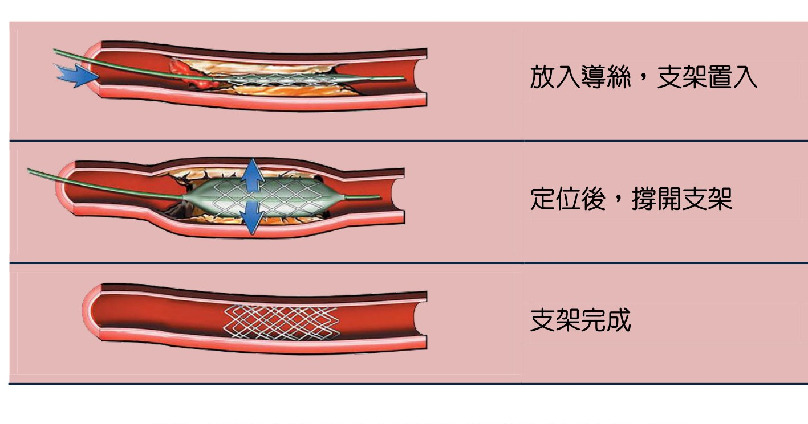
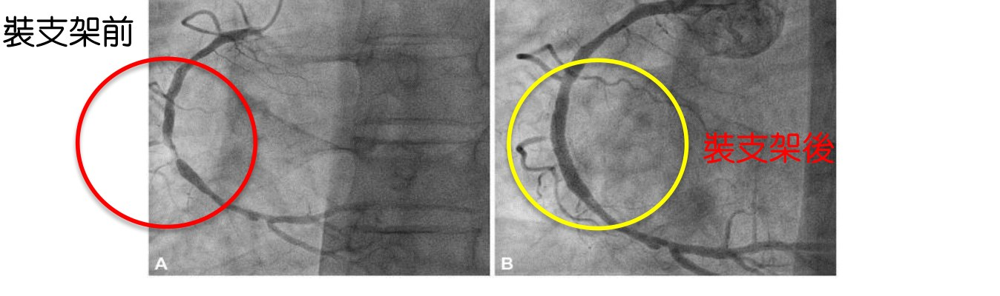

內科心導管支架（PCI）
內科心導管支架放置（經皮冠狀動脈介入治療，PCI）是一種侵入性較小的治療方式。透過導管，從手腕或鼠蹊部的血管進入，一路送到心臟狹窄的冠狀動脈，先以氣球將狹窄處撐開，再放入支架支撐血管壁，讓血流恢復暢通。通常當天可完成多數情況下，PCI 為局部麻醉、傷口僅約 0.1～0.3 公分，是一種「微創、恢復快」的處置方式。


支架手術前後的樣子
從冠狀動脈攝影影像可以看到，裝支架前血管嚴重狹窄、血流受阻；裝支架後原本狹窄的血管被撐開，血流恢復暢通。

關於支架的種類
目前臨床上多建議使用「塗藥支架（DES）」，能降低支架內再狹窄的機會。塗藥支架屬自費，費用約新台幣 15～20 萬元以上（視支架數量與材料而定，不含住院費用）。臨床小提醒放置支架後，雙重抗血小板藥物（如阿斯匹靈＋保栓通類）務必依醫囑按時服用、不可自行停藥，以免發生支架血栓。